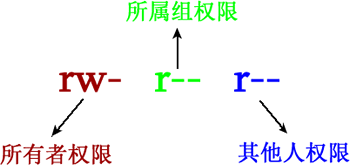
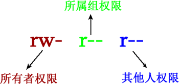

Linux权限位（超详细）
Linux 系统，最常见的文件权限有 3 种，即对文件的读（用 r 表示）、写（用 w 表示）和执行（用 x 表示，针对可执行文件或目录）权限。在 Linux 系统中，每个文件都明确规定了不同身份用户的访问权限，通过 ls 命令即可看到。
可以看到，每行的第一列表示的就是各文件针对不同用户设定的权限，一共 11 位，但第 1 位用于表示文件的具体类型，最后一位此文件受 SELinux 的安全规则管理，不是本节关心的内容，放到后续章节做详细介绍。
因此，为文件设定不同用户的读、写和执行权限，仅涉及到 9 位字符，以 ls 命令输出信息中的 .bash_logout 文件为例，设定不同用户的访问权限是 rw-r--r--，各权限位的含义如图 1 所示。

图 1 文件权限位
从图中可以看到，Linux 将访问文件的用户分为 3 类，分别是文件的所有者，所属组（也就是文件所属的群组）以及其他人。
Linux 系统中，多数文件的文件所有者和所属群组都是 root（都是 root 账户创建的），这也就是为什么，root 用户是超级管理员，权限足够大的原因。
除此之外，我们有时会看到 s（针对可执行文件或目录，使文件在执行阶段，临时拥有文件所有者的权限）和 t（针对目录，任何用户都可以在此目录中创建文件，但只能删除自己的文件），文件设置 s 和 t 权限，会占用 x 权限的位置。
例如，我们以 root 的身份登陆 Linux，并执行如下指令：
[root@localhost ~]# ls -al
total 156
drwxr-x---. 4 root root 4096 Sep 8 14:06 .
drwxr-xr-x. 23 root root 4096 Sep 8 14:21 ..
-rw-------. 1 root root 1474 Sep 4 18:27 anaconda-ks.cfg
-rw-------. 1 root root 199 Sep 8 17:14 .bash_history
-rw-r--r--. 1 root root 24 Jan 6 2007 .bash_logout
...
可以看到，每行的第一列表示的就是各文件针对不同用户设定的权限，一共 11 位，但第 1 位用于表示文件的具体类型，最后一位此文件受 SELinux 的安全规则管理，不是本节关心的内容，放到后续章节做详细介绍。
因此，为文件设定不同用户的读、写和执行权限，仅涉及到 9 位字符，以 ls 命令输出信息中的 .bash_logout 文件为例，设定不同用户的访问权限是 rw-r--r--，各权限位的含义如图 1 所示。

图 1 文件权限位
从图中可以看到，Linux 将访问文件的用户分为 3 类，分别是文件的所有者，所属组（也就是文件所属的群组）以及其他人。
有关群组的概念，我们已在用户和用户组一章中做了说明。除了所有者，以及所属群组中的用户可以访问文件外，其他用户（其他群组中的用户）也可以访问文件，这部分用户都归为其他人范畴。
很显然，Linux 系统为 3 种不同的用户身份，分别规定了是否对文件有读、写和执行权限。拿图 1 来说，文件所有者拥有对文件的读和写权限，但是没有执行权限；所属群组中的用户只拥有读权限，也就是说，这部分用户只能读取文件内容，无法修改文件；其他人也是只能读取文件。Linux 系统中，多数文件的文件所有者和所属群组都是 root（都是 root 账户创建的），这也就是为什么，root 用户是超级管理员，权限足够大的原因。
关注公众号「站长严长生」，在手机上阅读所有教程，随时随地都能学习。内含一款搜索神器，免费下载全网书籍和视频。

微信扫码关注公众号